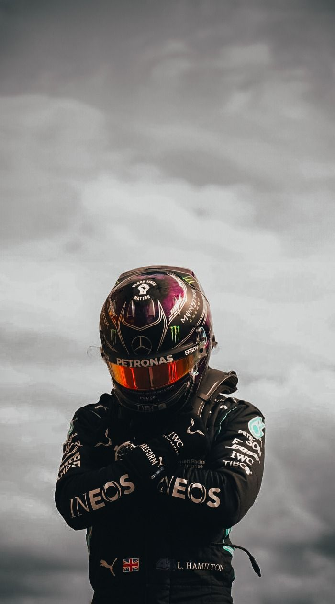
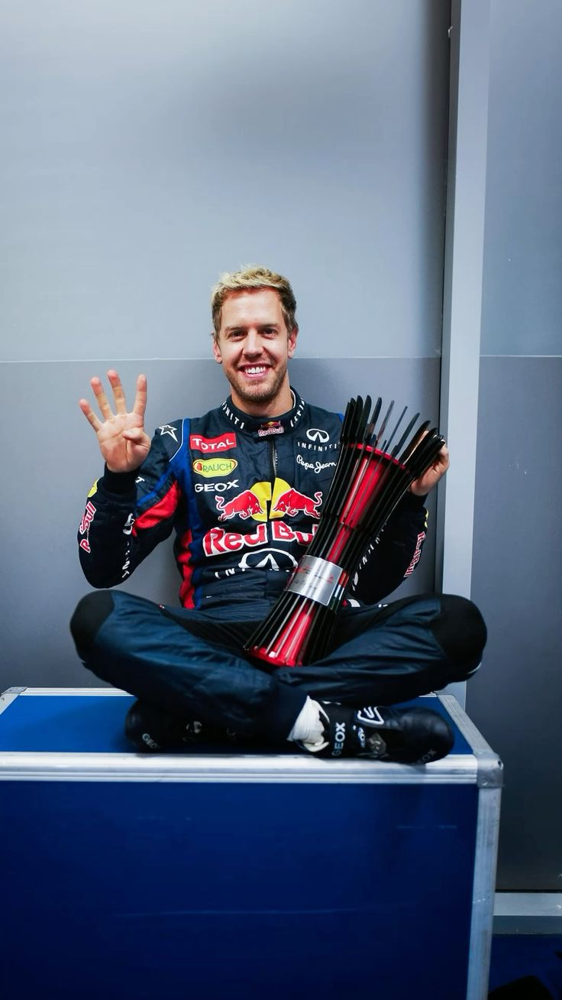
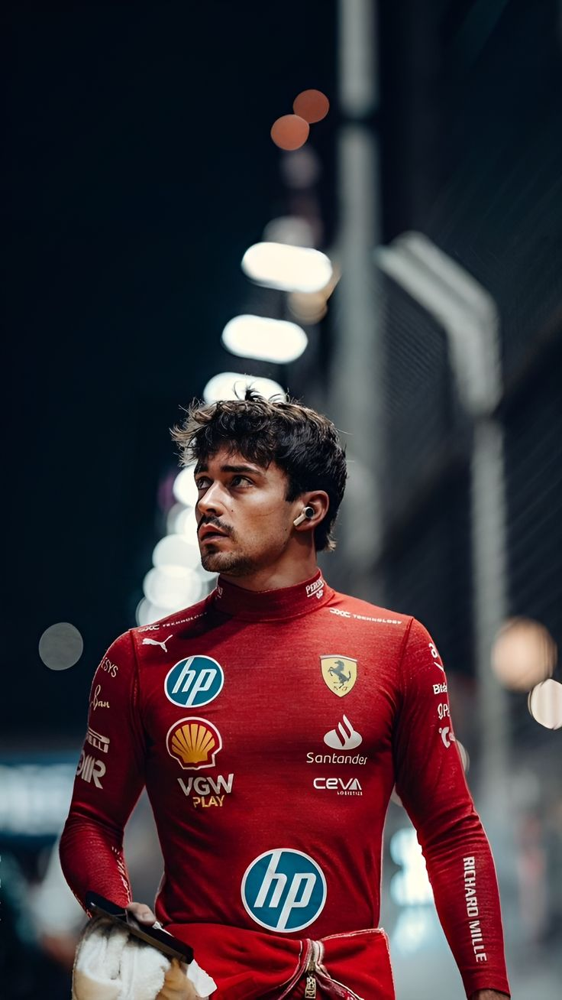

About the Project
This project titled F1 was developed by our team comprising of Md Kasif Ali, Mullick Waliullah, Aribah Tahseen and Syed Tabrez. We are students of Computer Science Engineering having a keen interest in F1 and wanted to build something that combined both our technical skills and our favourite sport. This is a basic data visualization project on F1 drivers. Our main goal was to ensure upcoming F1 fans could gain knowledge through our project and to test our skills hands-on by developing a fun project. Team Breakdown: Md Kasif Ali and Mullick Waliullah handled the Front-end part of the project using HTML, CSS, and NodeJS, ensuring the dashboard looked sleek and easy to read. Syed Tabrez and Aribah Tahseen handled the Back-end using FastF1 with Python. They managed data processing and ensured everything worked correctly.


